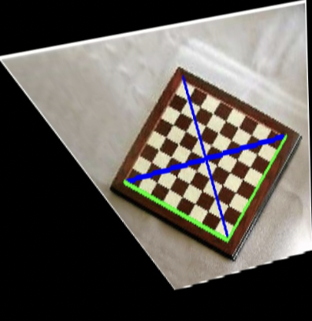

- All
- Computer Vision
- Deep Learning
- Generative Models
- Robotics
Structure from Motion

Neural Radiance Fields

Epipolar Geometry
Single View 3D Reconstruction

Image Rectification
Recover Camera Pose from Rotation Dominant Motion
Planar Homography

Photometric Stereo
3D Learning basics with Pytorch3d

Image Registration

Defect Identification in Wind Turbines

Semantic segmentation of high resolution aerial imagery
Understanding and dispensing ingredients for smart robotic cooking

Lego Kitting

Design of Fixed wing UAV for package delivery

Design of e-VTOL UAV with enhanced flight times

Single View 3D reconstruction using neural networks

A study on empathy towards robots and its relation to
anthropomorphism and robot familiarity

Real Time Controllable Motion Transition for Characters

GANs and Diffusion Model

Gradient Domain Fusion

Neural Style Transfer